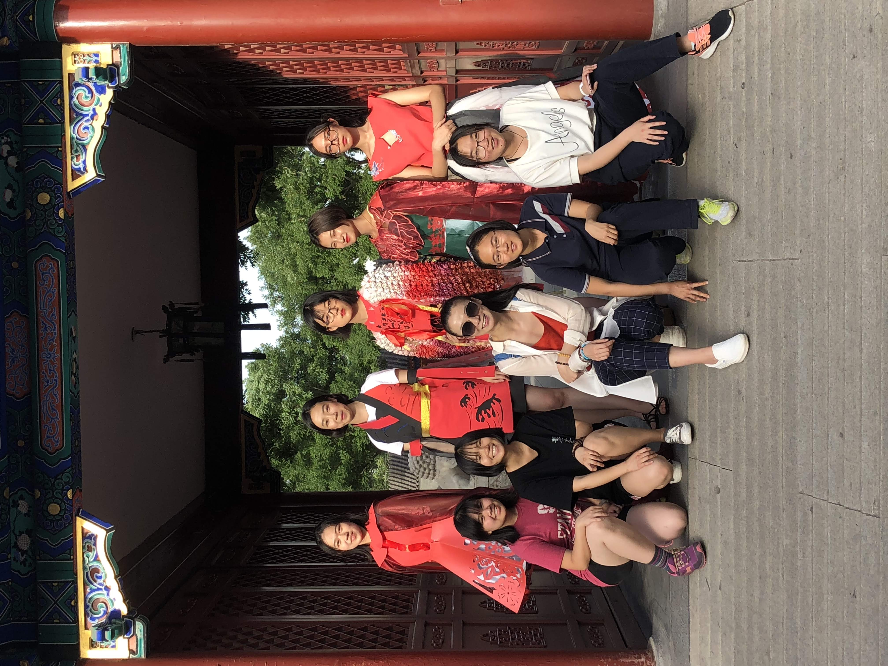
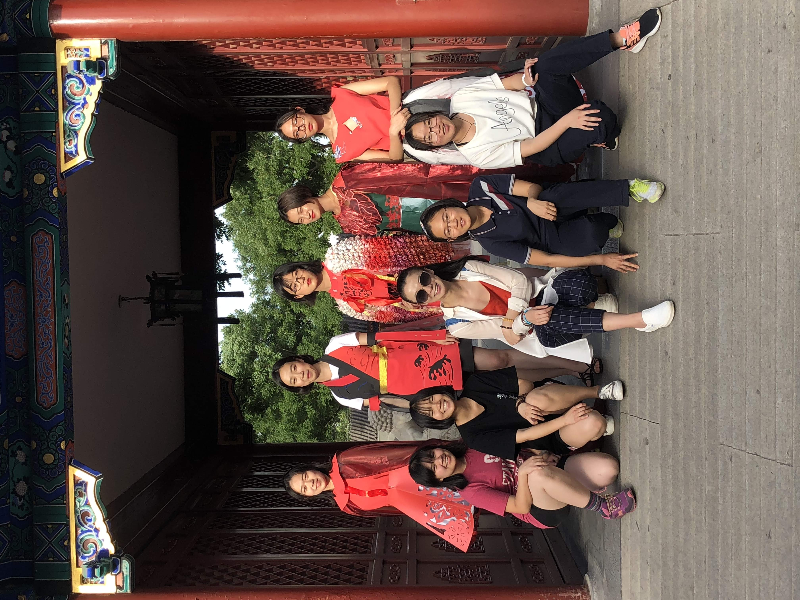

Chinese papercutting-inspired dress
Created for Beijing city-wide "Paper Dreams" Contest
1st place model award
Materials: foam sheets, cardstock, ribbon, hot glue, thread, tulle
Many thanks to the Beijing No. 80 Vogue Geek fashion club for being an awesome team and teaching me lots! Special thanks to Zhuyi for helping me make the cape and Wang Yan for being a great model!
 
